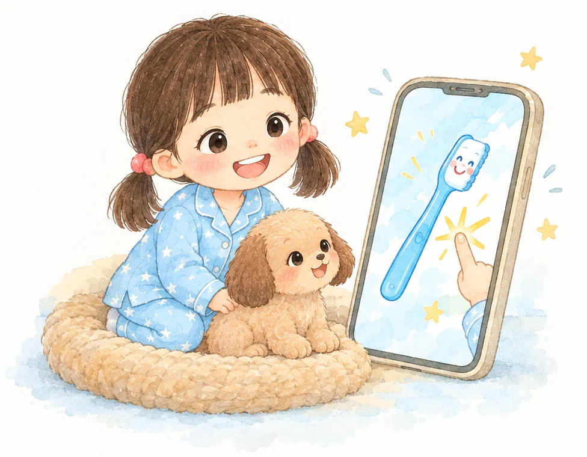

릴리랑릴리랑
릴리랑릴리랑하루 습관마다 2분, 4~7세 아이와 부모가 함께 듣는 영어 그림책

릴리가 멈추면아이가 톡!이야기가 이어져요로그인 없이 바로 시작해요
아침부터 밤까지, 2분짜리 그림책 7편
릴리가 묻고 기다리면, 아이가 그림을 눌러 이야기를 이어 가요.


8초가 지나면 릴리가 대신 넘어가요. 틀리는 일은 없어요.

3번 이어 듣기를 켜 두면 연달아 들려줘요.

릴리가 기다리면 아이가 직접 눌러야 다음 장면이 나와요.

양치할 때 부모님이 Brush my teeth!
한마디면 들은 말이 생활로 이어져요.

그다음부터는 영어만 들려 뜻을 스스로 붙잡게 해요.

로그인 없이 바로 시작해요
무료로 2분 들어보기